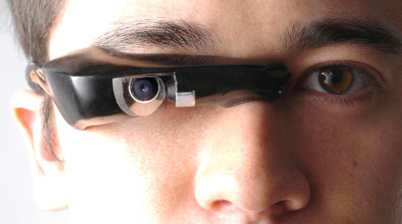
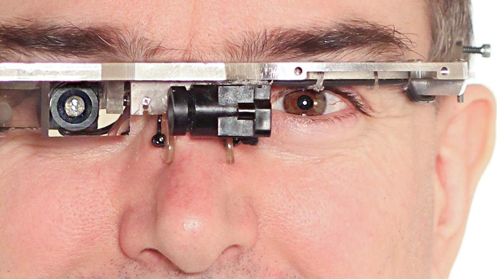

EyeTap
Wearable computing before it had a name

Overview
EyeTap is a wearable device worn in front of one eye that acts as both a camera and a display: it records the scene available to the eye and superimposes computer-generated imagery on that same scene. Steve Mann began building wearable computer systems in high school in the late 1970s and developed successive “WearComp” backpack rigs through the 1980s, eventually shrinking them toward eyeglass form. The work underlies modern smart glasses, AR headsets, and lifelogging concepts.
Deep dive
Mann’s first EyeTap versions consisted of a backpack computer wired to a camera and viewfinder mounted on a helmet. The later optical design uses a beam splitter to send the same incoming light to both the user’s eye and a camera; the camera digitizes the scene, a computer processes it, and a display (the “aremac”) projects the augmented image back through the beam splitter. This creates what Mann calls “computer-mediated reality” or “augmented reality,” distinct from a conventional HUD because the computer can modify the real-world view in response to what it sees. Mann is widely cited as the “father of wearable computing” and coined sousveillance (personal, bottom-up recording) as a counterpoint to surveillance. In the mid-1990s he ran continuous personal-broadcast experiments that are considered early precursors to moblogging and lifelogging. He co-founded the International Symposium on Wearable Computers in 1997 and received the 2025 IEEE Masaru Ibuka Consumer Technology Award for his work.
The exact year of the first EyeTap prototype is reported differently across sources (late 1970s vs. early 1980s); the consensus is that Mann was wearing homemade head-mounted camera/display systems while still in high school and continued refining them through the 1980s.
Mann has described feeling “nauseous, unsteady, naked” when removing the device after decades of use. In 2012 he reported being assaulted at a Paris McDonald’s because employees objected to his permanently attached EyeTap glasses.
Team & pioneers
- Steve Mann Inventor and researcher; built camera-display eyeglasses as a high-school student in the 1980s and coined much of the wearable-computing vocabulary.
- MIT Media Lab Mann's later research home, where wearable computing was explored as a new paradigm for human augmentation.
- University of Toronto Long-term research base where Mann continued work on mediated, augmented, and diminished reality.
Media


Sources
- Wikipedia, “EyeTap”
- Wikipedia, “Steve Mann (inventor)”
- IEEE Spectrum, “The Accidental Engineer Who Conjured Up Extended Reality”
- Steve Mann, “Wearable Computing: Toward Humanistic Intelligence” (IEEE Intelligent Systems, 2001)
- YouTube, “DEF CON 7 - Steve Mann: The Inventor of the So Called Wearable Computer”
- YouTube, “The Father of Wearable Computing | Steve Mann | TEDxUTSC”